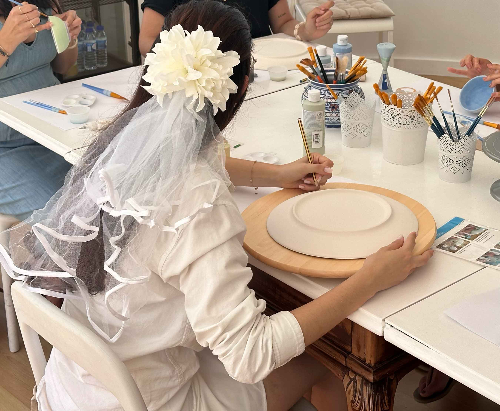
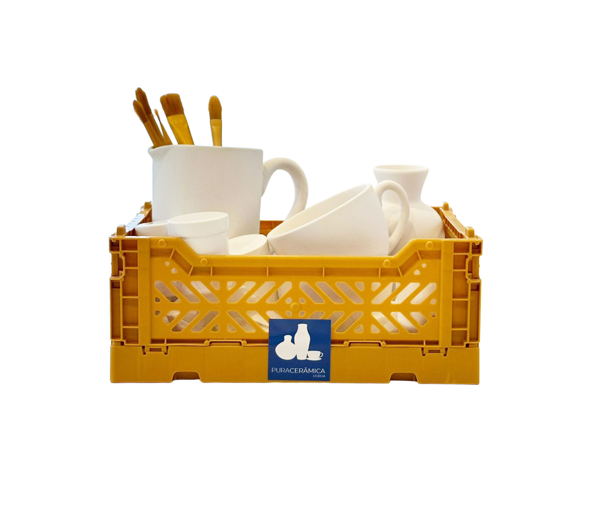
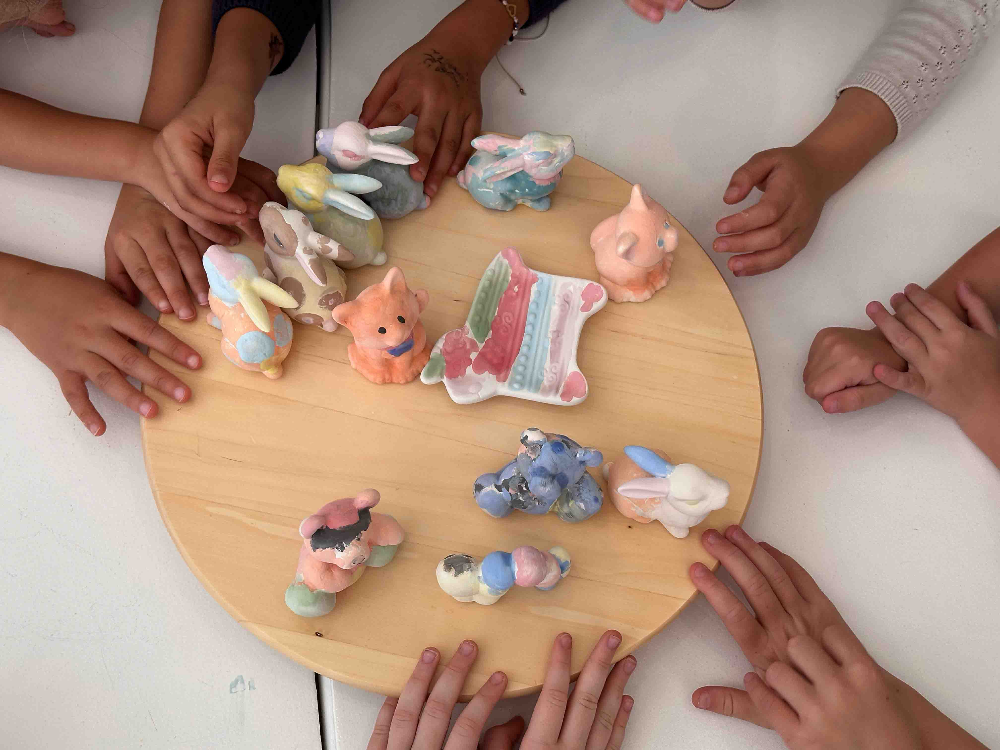
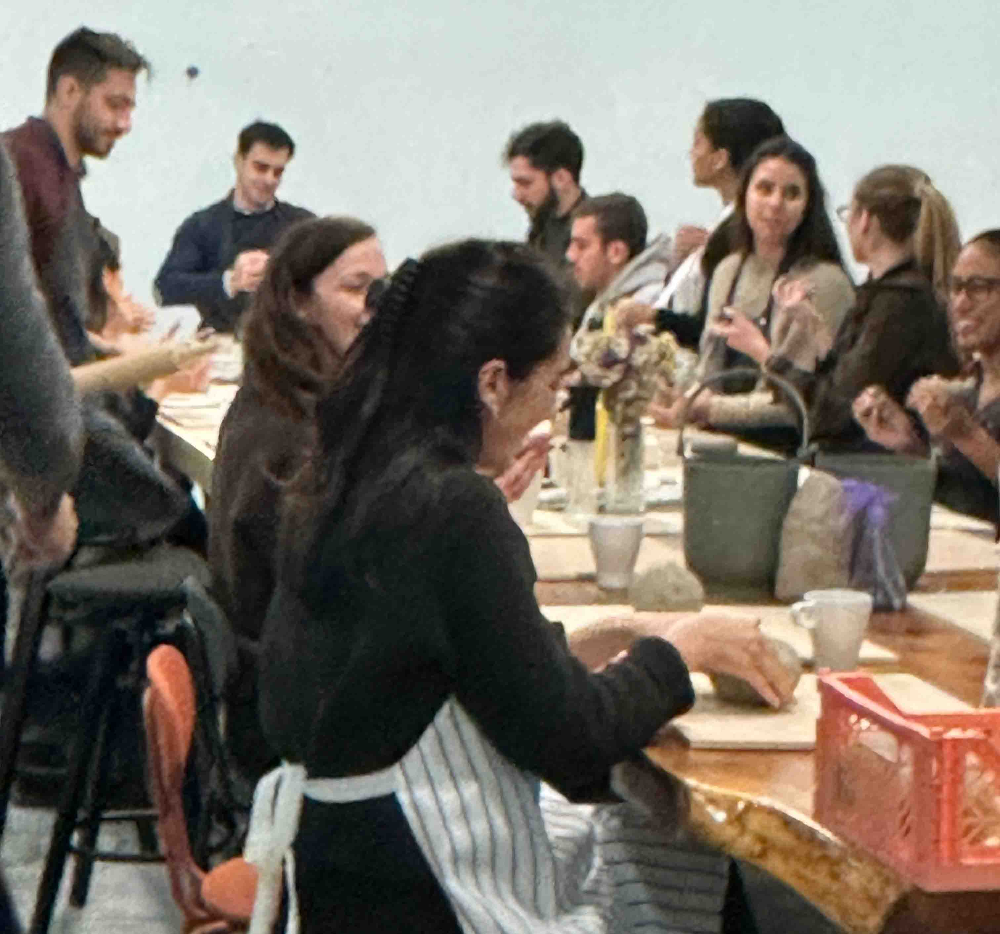
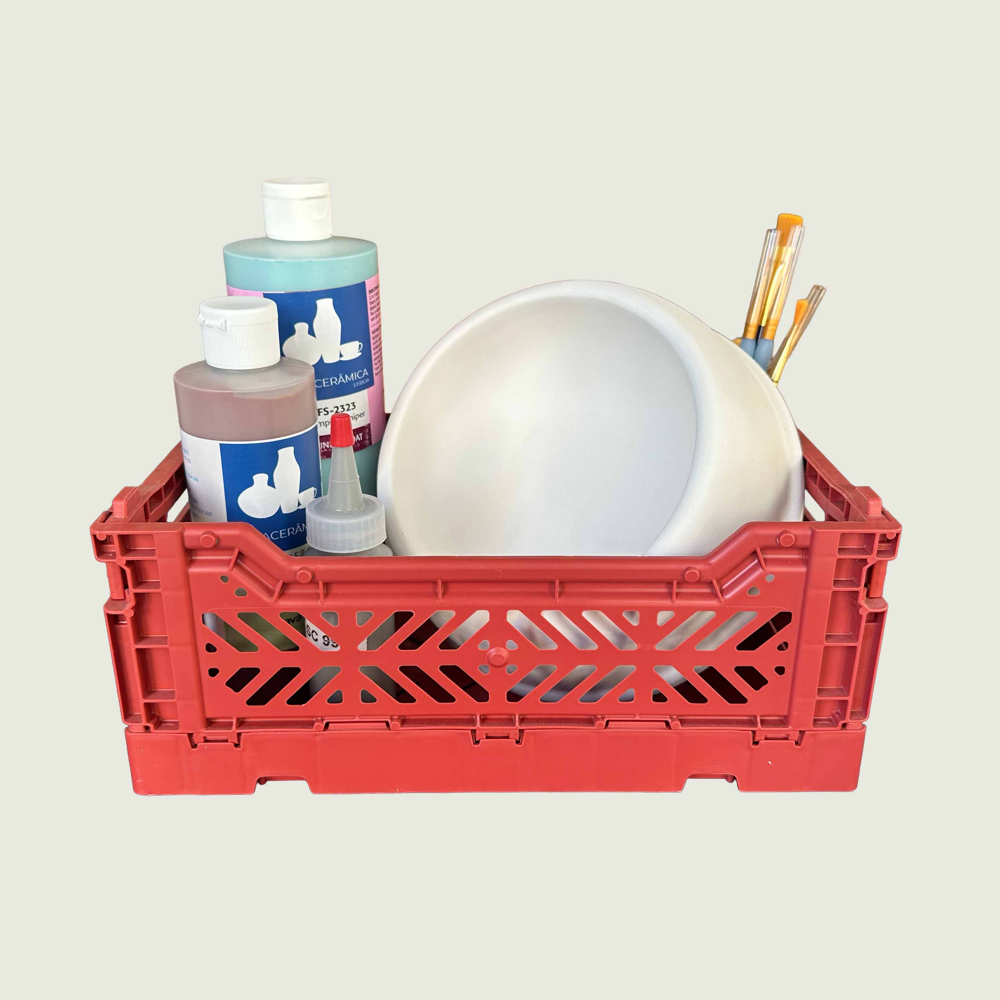

03
Crianças
Celebre o aniversário do seu filho de forma criativa e deixe-o explorar a imaginação.
Explorar →

05
Especial Pet
Traga o seu amigo peludo e crie uma recordação única em cerâmica com a impressão da patinha.
Explorar →
06
Escolas
Estimule a criatividade e inspire os seus alunos com algo diferente fora da sala de aula.
Explorar →